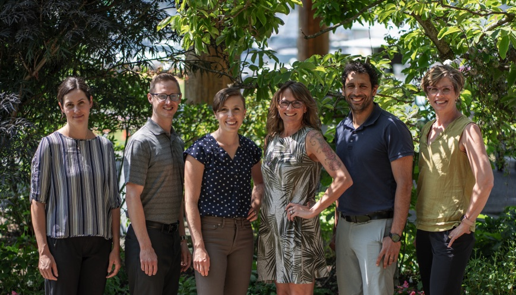

About us
Ascent Physiotherapy is a full service physiotherapy clinic located in Comox, BC. We offer Physiotherapy, including Manual/Manipulative Therapy, IMS, Acupuncture, Radial Shockwave Therapy and exercise prescription including Personal Training to the residents of the Comox Valley and surrounding area.
Why choose us?
At Ascent Physiotherapy, we offer expert care with personalized treatment plans to help you recover faster. Our experienced team uses the latest techniques to treat a wide range of conditions in a supportive, welcoming environment. With flexible scheduling and a focus on your well-being, we’re here to help you achieve lasting results.
Our mission & vision
At Ascent Physiotherapy, our mission is to deliver personalized, high-quality care that helps our patients recover, enhance mobility, and achieve their full potential. We are committed to using the latest evidence-based treatments in a supportive and healing environment. Our vision is to be a trusted leader in physiotherapy, providing exceptional care that promotes long-term health and well-being. Through innovative treatments and patient education, we aim to empower our community to live active, pain-free lives.